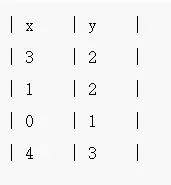

第 6 题
根据一名学生大一获得 A 等成绩的科目数 x（包括 A−、A 和 A+），预测他大二获得 A 等成绩的科目数 y。表中每一行是一条训练样本。线性回归模型为 hθ(x) = θ₀ + θ₁x，m 表示样本数。

上表给出的训练样本数 m 是多少？查看计算步骤与答案
- 把表头与数据分开。表头的 x 和 y 只是列名。
- 实际数据是 (3, 2)、(1, 2)、(0, 1)、(4, 3)，每行是一条样本。
- 共有 4 行数据，因此 m = 4。
用一条直线估计数值，再让梯度下降自动调整这条线。
一套面积为 1 单位的房子卖 2 单位，另一套面积为 2 单位的房子卖 4 单位。面积翻倍时价格也翻倍，怎样把这个规律变成对新房的估价？
接上之前学过的分类与回归。
暂时把直线固定为经过原点。先猜面积该乘几，再拖斜率，找出让两段残差都消失的设置。
蓝点是真实数据，绿色实线是预测直线，红色虚线表示预测值与实际值的差。
斜率设为 1 时，预测是 1、2，实际是 2、4，误差为 −1、−2。分别平方得 1、4，和为 5。除以两倍样本数 4，代价为 1.25。平方使正负误差不会抵消。
先用 0.20 点两次，预测第三次会到哪里。再试 0.60 和 0.90，对比跨过谷底后的变化。
蓝线记录每个斜率的代价。红点是当前一步，绿色空心点是走过的位置。
从斜率 0 往右挪一点，代价会下降。走到谷底右边，下降方向会指向左边。设定一个学习率后，每一步按当前位置的梯度决定更新幅度。
斜率 w 写作 θ₁，截距 b 写作 θ₀，预测 ŷ 写作 hθ(x)。m 是样本数。等高线图上的每根线连接代价一样的参数点，直线上的预测和代价随参数变化是两张不同的图。
如果截距也参与学习，先从同一组旧参数 w=0、b=0 算截距梯度 (−2−4)/2=−3，再同时更新到 w=1、b=0.6。新预测为 1.6、2.6，代价约为 0.53。
仍用 (1,2)、(2,4)，固定截距为 0。若当前 w=1，学习率是 0.20，下一步的梯度、斜率和代价分别是多少？
误差 −1、−2，梯度 [−1×1−2×2]/2=−2.5，斜率改成 1.5。新误差 −0.5、−1，代价 (0.25+1)/4=0.3125。
误差平方对误差求导得到 2e，与代价中的 1/2 抵消。再乘预测值对各参数的变化率，得到斜率梯度 Σ(ex)/m 和截距梯度 Σe/m。训练代价为零只约束已有样本，新房仍可能偏离训练样本给出的规律。
errors = [w*x + b - y for x, y in data]
dw = sum(e*x for e, (x, _) in zip(errors, data)) / len(data)
db = sum(errors) / len(data)
w, b = w - alpha*dw, b - alpha*db先独立作答，再展开解析核对。计算题可以在纸上列式。
根据一名学生大一获得 A 等成绩的科目数 x（包括 A−、A 和 A+），预测他大二获得 A 等成绩的科目数 y。表中每一行是一条训练样本。线性回归模型为 hθ(x) = θ₀ + θ₁x，m 表示样本数。

上表给出的训练样本数 m 是多少？使用第 6 题的训练集。代价函数 J(θ₀, θ₁) = [1/(2m)] ∑ᵢ₌₁ᵐ (hθ(x⁽ⁱ⁾)−y⁽ⁱ⁾)²。求 J(0, 1)。
沿用第 6 题的线性回归模型，令 θ₀=−1，θ₁=2。求 hθ(6)。
代价函数J(θ₀,θ₁)与θ₀,θ₁的关系如图2所示。“图1”中给出了相同代价函数的等高线图。根据图示，选择正确的选项（选出所有正确项）
答案 A、E
等高线中心 A 对应曲面最低点 P。学习率合适时，从 B 做梯度下降会朝 A 移动，因此 A、E 正确。C 点离中心更远，D 误把 A 说成最大值。
题册勘误 原答案字母 A、E 正确，其中一行旁注误把 P 对应到 C。
对于一个线性回归任务（例如预测房价），假设能找到一组参数 θ₀、θ₁，使训练集上的代价 J(θ₀, θ₁)=0。哪些陈述正确？（选出所有正确项）
答案 B
代价是非负平方项的和，和为 0 说明每一项都为 0，因此每个训练样本的预测都等于真实值。A 的参数可以取其他值；C 否认了可能的完全拟合；D 把训练表现直接外推到新样本。
预测值代公式。代价对所有误差平方求和，再除以 2m。J=0 仅说明训练样本全部拟合。
预测房屋价格和预测房屋是否售出分别是什么任务？
价格是回归，售出与否是二分类。